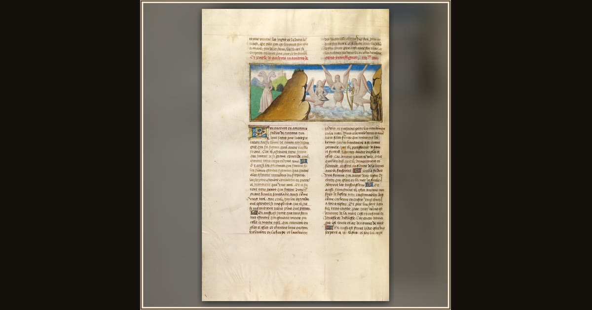

Scylla and Sirens
Flemish (unknown maker) · about 1475 · The J. Paul Getty Museum · Los Angeles, USA
Three Sirens play their bewitching music on the shore while Scylla lurks nearby — two of the great dangers on Odysseus’s road home. Explore its place in Book XII of the Odyssey.